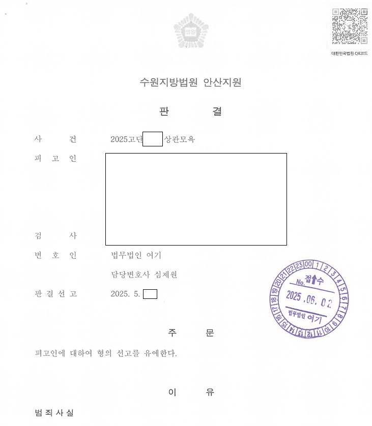

01사건 개요
복무 중 한 발언으로 상관모욕 수사를 받던 중 합의가 되지 않은 채 전역해, 사건이 민간 검찰로 이송된 사건입니다.
02쟁점
- 민간 검찰이 바로 기소하기 전에 합의할 시간을 확보할 수 있는지
- 군검찰이었다면 기소유예였을 사안이 민간에서 기소된 경우의 양형
03변호사가 한 일
- 가장 먼저 검사실에 전화해 합의와 의견서를 위한 시간을 요청했습니다.
- 피해자에게 여러 차례 연락해 합의를 이끌어 냈고, 자필 편지까지 받았습니다.
- 합의서를 미리 알리고 선처를 구하는 의견서를 냈습니다.
04결과
기소됐지만 민간 법원에서 선고유예를 받았습니다.

이 사례는 원문을 요약해 정리한 것입니다. 사건 경과와 판결문 등 전체 내용은 로톡에 게시된 원문에서 볼 수 있습니다.
로톡에서 전문 보기 →05비슷한 상황이라면
검찰은 의뢰인을 위해 기다려 주지 않습니다. 사건이 이송됐다면 바로 검사실과 소통해야 합니다.
군에서 입건됐는데 전역하면 사건은 어떻게 되나요?
전역하면 사건은 민간 검찰로 이송됩니다. 기소 전에 검사실에 연락해 합의와 의견서 제출 시간을 확보하는 것이 중요합니다. 전역 후 상관모욕 사건에서 혐의없음, 선고유예를 받은 사례가 있습니다.
상관에게 욕을 했으면 무조건 상관모욕죄로 처벌받나요?
아닙니다. 법원은 무례하거나 경미한 수준의 표현은 모욕에 해당하지 않는다고 엄격하게 판단합니다. 상관모욕 사건에서 군사법원 무죄 판결 후 군검사의 항소를 서울고등법원이 기각해 무죄가 확정된 사례가 있습니다.
성고충심의위원회에 성희롱으로 신고됐어요. 어떻게 대응하나요?
발언의 경위와 맥락, 당사자 관계를 구체적으로 소명해야 합니다. 대화 중 한마디가 문제된 사건 등에서 성희롱 미성립 결정을 받은 사례가 여러 건 있고, 징계가 내려진 경우에도 징계항고로 정직 3월을 감봉 3월로 감경한 사례가 있습니다.
평일 09:00–18:00 변호사가 직접 전화를 받습니다.
재판으로 자리에 없는 경우 로톡으로 상담을 신청하시거나 이메일로 문의해 주세요.
의뢰인이 특정되지 않도록 사실관계를 일부 줄이거나 바꾸어 정리했습니다. 사건의 결과는 구체적인 사실관계와 증거에 따라 달라질 수 있으며, 같은 결과를 보장하지 않습니다.